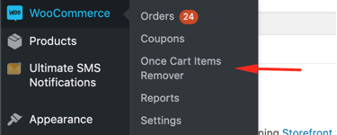
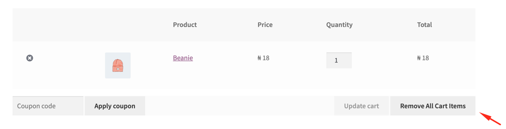

Remove easily all your cart items in one click.
Prerequesites
- WordPress 4.9+
- WooCommerce 3.0+
- PHP 5.6+
Installation
Follow WordPress rules for installing an plugin available here
Configuration
Go to WooCommerce submenu and you'll see this into your dashboard.

Checking this option, allow you to display the remove all items button present on the cart page.
You'll see this button into your shop cart page.
I hope you found this plugin usefull , don't forget to rate us on WordPress.
Follow us on :: HomeScript : HomeScript : HomeScript